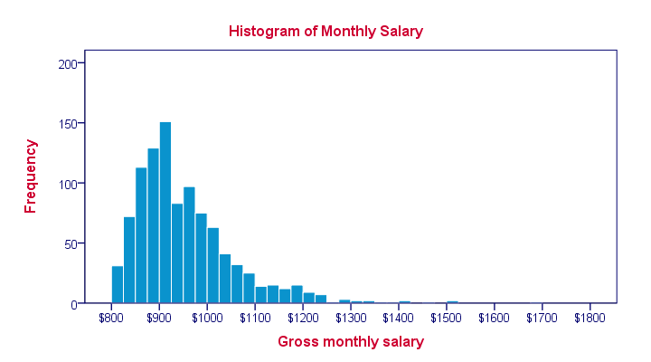
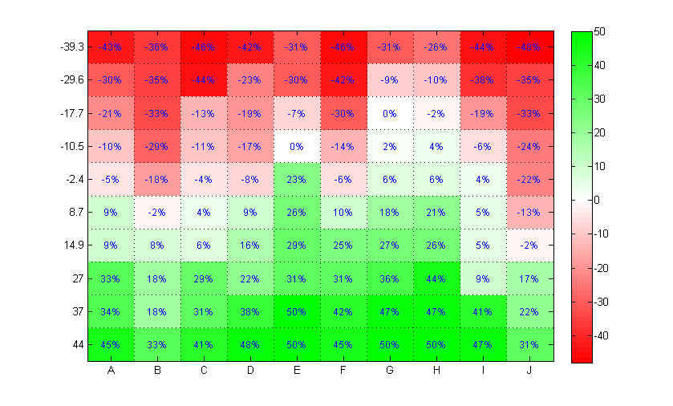
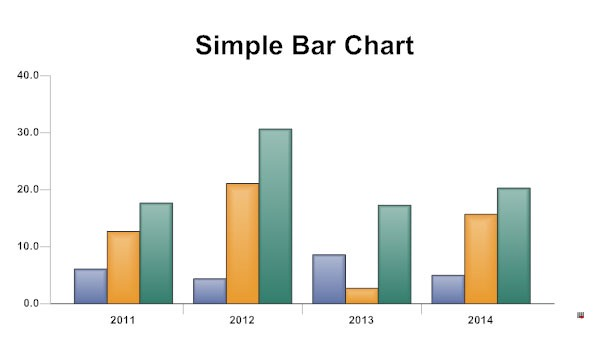
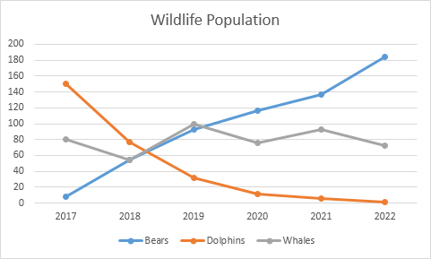
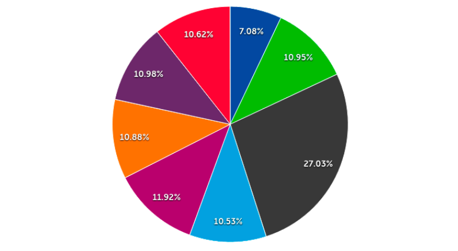
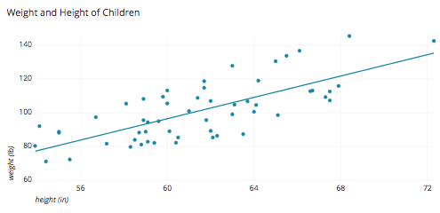
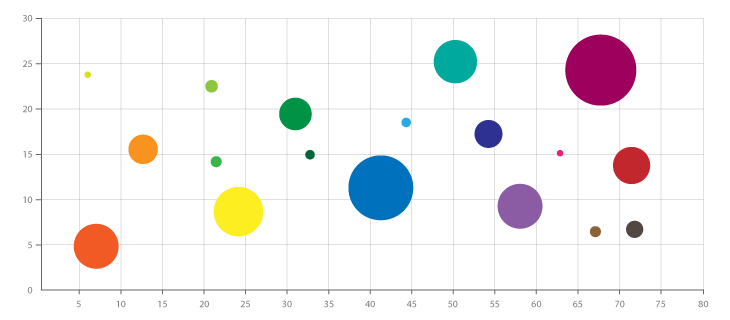
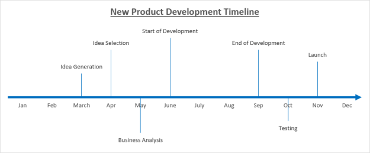
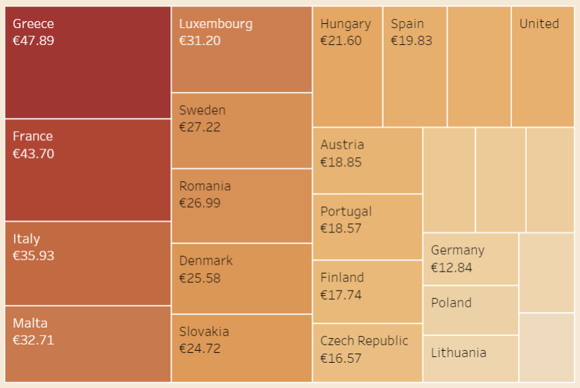

Data Visualizations
Data Visualization and it’s techniques:
Data Visualizations is the graphic representation of data. It involves producing images that communicate relationships among the represented data to viewers of the images. This communication is achieved through the use of a systematic mapping between graphic marks and data values in the creation of the visualization. This mapping establishes how data values will be represented visually, determining how and to what extent a property of a graphic mark, such as size or color, will change to reflect change in the value of a piece of information. To communicate information clearly and efficiently, data visualization uses statistical graphics, plots, information graphics and other tools. Numerical data may be encoded using dots, lines, or bars, to visually communicate a quantitative message.Effective visualization helps users analyze and reason about data and evidence. It makes complex data more accessible, understandable and usable. Users may have particular analytical tasks, such as making comparisons or understanding causality, and the design principle of the graphic (i.e., showing comparisons or showing causality) follows the task. Tables are generally used where users will look up a specific measurement, while charts of various types are used to show patterns or relationships in the data for one or more variables.
Without the concept of visualization, mining and analysis doesn’t play any role of importance as data mining is the idea of finding inferences by analyzing the data through patterns and those patterns can only be represented by different visualization techniques.
Uses of data visualization:
- Powerful way to explore data with presentable results.
- Primary use is the preprocessing portion of the data mining process.
- Supports in data cleaning process by finding incorrect and missing values.
- For variable derivation and selection means to determine which variable to include and discarded in the analysis.
- Also play role in combining categories as part of the data reduction process.
Techniques:
- Box plots:

A method for graphically depicting groups of numerical data through their quartiles. It is a standardized way of displaying the distribution of data based on five features:
- minimum -minimum value in the dataset.
- first quartile(25th percentile)- the middle number between the smallest value and the median of the dataset.
- median- the middle value of dataset.
- third quartile(75th percentile)- the middle value between the median and teh highest value of the dataset
- maximum- the maximum value in the dataset
Also the lower and upper quartiles are shown as horizontal lines of the rectangle.It has vertical line inside to indicate the median value.
- Histograms:
It is an accurate representation of the distribution of numerical data, it relates only one variable. Includes bin or bucket- the range of values that is divide the entire range of values into a series of intervals and then count how many values fall in to each interval.
Bins are consecutive,non- overlapping intervals of a variable. As the adjacent bins leave no gaps, the rectangles of histogram touch each other to indicate that the original value is continuous.
- Heat maps:

It is a graphical representation of data where the individual values contained in a matrix are represented as colors.Useful for two purposes: for visualizing correlation tables and for visualizing missing values in the data. In both cases the information is conveyed in a two-dimensional table.
Note that heat maps are useful when examining a large number of values, but they are not a replacement for more precise graphical display, such as bar charts, because color differences cannot be perceived accurately.
- Charts:
It gives a graphical representation of data has various types:
Bar charts:

It represents the categorical data with rectangular bars of heights and lengths proportional to the values they they represent.
Line charts:

It is a type of chart which displays information as a series of data points called markers connected by straight line segments.
Pie charts:

It is circular statistical graph which decide into slices to illustrate numerical proportion. Here the arc length of each slide is proportional to the quantity it represents.
Scatter charts:

It is a type of plot or mathematical diagram that display value for typically two variables for a set of data using Cartesian coordinates.
Bubble charts:

It is a variation of scatter chart in which the data points are replaced with bubbles, and an additional dimension of data is represented in the size of the bubbles.
Time Line charts:

It shows the chronological sequence of past or future events on a timescale.
- Tree maps:

It is a method of displaying hierarchical data using nested figures like rectangles. Has a tree like structure with each branch is given a rectangle which then tiles with smaller rectangles representing sub branches. A leaf node rectangle has an area proportional to specified dimension of the data. Depending on choice leaf node is colored,sized or both according to chosen attributes.They make efficient use of space,thus display thousands of items on the screen simultaneously.